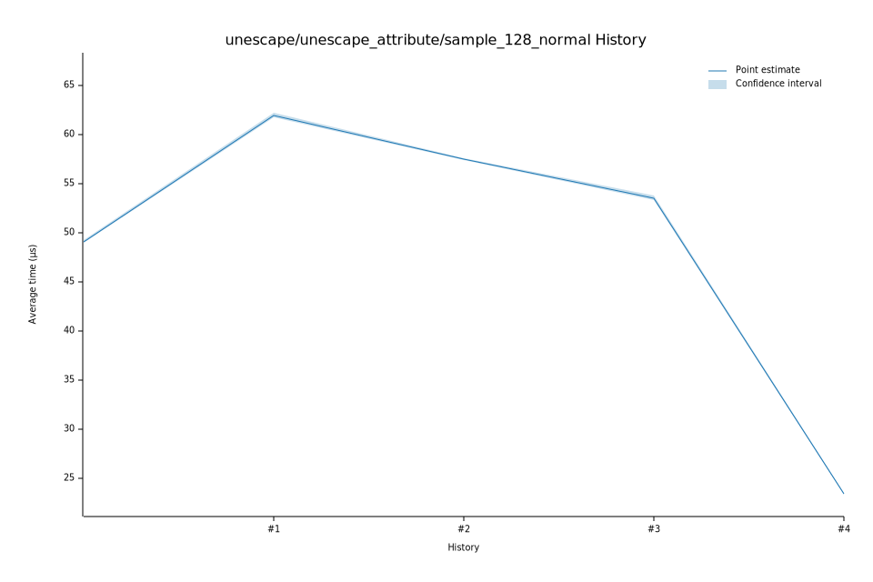

# 62023-01-21T07:26:05-08:00
|
Lower Bound |
Estimate |
Upper Bound |
| Value: |
23.08µs |
23.14µs |
23.21µs |
| Throughput: |
698.26MiB/s |
696.30MiB/s |
694.13MiB/s |
| Change in Value: |
+0.6994% |
+1.6025% |
+2.5237% |
| Change in Throughput: |
-0.6945% |
-1.5772% |
-2.4615% |
No change in performance detected.
# 52023-01-21T06:23:49-08:00
|
Lower Bound |
Estimate |
Upper Bound |
| Value: |
22.79µs |
22.86µs |
22.97µs |
| Throughput: |
707.10MiB/s |
704.80MiB/s |
701.60MiB/s |
| Change in Value: |
-3.1522% |
-2.2152% |
-1.3372% |
| Change in Throughput: |
+3.2548% |
+2.2654% |
+1.3553% |
No change in performance detected.
# 42023-01-21T06:19:42-08:00
|
Lower Bound |
Estimate |
Upper Bound |
| Value: |
23.35µs |
23.40µs |
23.45µs |
| Throughput: |
690.10MiB/s |
688.61MiB/s |
687.02MiB/s |
| Change in Value: |
-56.598% |
-56.203% |
-55.750% |
| Change in Throughput: |
+130.40% |
+128.33% |
+125.99% |
No change in performance detected.
# 32023-01-21T06:15:14-08:00
|
Lower Bound |
Estimate |
Upper Bound |
| Value: |
53.30µs |
53.53µs |
53.83µs |
| Throughput: |
302.29MiB/s |
301.00MiB/s |
299.35MiB/s |
| Change in Value: |
-11.862% |
-9.5554% |
-7.6557% |
| Change in Throughput: |
+13.458% |
+10.565% |
+8.2904% |
No change in performance detected.
# 22023-01-21T06:10:39-08:00
|
Lower Bound |
Estimate |
Upper Bound |
| Value: |
57.38µs |
57.49µs |
57.61µs |
| Throughput: |
280.82MiB/s |
280.28MiB/s |
279.70MiB/s |
| Change in Value: |
-6.0877% |
-4.3250% |
-1.7873% |
| Change in Throughput: |
+6.4823% |
+4.5205% |
+1.8198% |
No change in performance detected.
# 12023-01-21T06:06:14-08:00
|
Lower Bound |
Estimate |
Upper Bound |
| Value: |
61.78µs |
61.99µs |
62.26µs |
| Throughput: |
260.81MiB/s |
259.92MiB/s |
258.79MiB/s |
| Change in Value: |
+24.793% |
+25.720% |
+26.610% |
| Change in Throughput: |
-19.868% |
-20.458% |
-21.017% |
No change in performance detected.
# 02023-01-21T06:01:44-08:00
|
Lower Bound |
Estimate |
Upper Bound |
| Value: |
48.96µs |
49.12µs |
49.30µs |
| Throughput: |
329.08MiB/s |
328.06MiB/s |
326.87MiB/s |